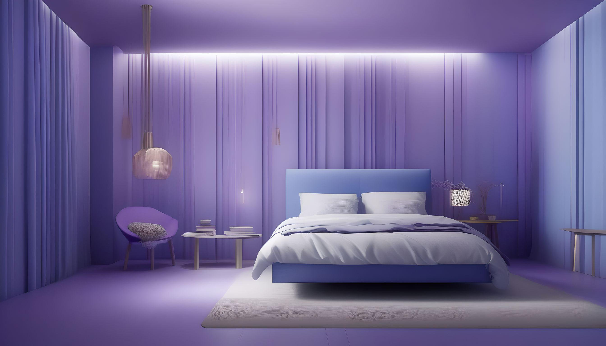

歡迎來到睡綿小羊官方網站
睡綿小羊是一款幫助您安眠的軟體，幫助您順利進入甜美夢鄉。
揪甘心
評價
以下是一些名人對軟體名稱的評價：
- 愛因斯坦：「噪音啊，我的靈感殿堂！當我用白噪音填充我的睡眠空白，它為我帶來了比相對論還要快的安眠速度！」
- 莎士比亞：「要安眠還是要專注，這是個問題。但當白噪音在我的耳邊低語時，我的睡眠和創作都能找到安寧之所。」
- 貝多芬：「對我來說，音樂是我的靈魂的寧靜。當我聆聽白噪音的節奏，它為我帶來了甜美的夢鄉，也讓我的音樂更加激昂！」
聯繫我們
如果您有任何問題或建議，請聯繫我們：
- 電子郵件：sleepingsheep@gmail.com
- 電話：+886-123-456-7890
- 地址：123 聯大路, 聯合大學, taiwan